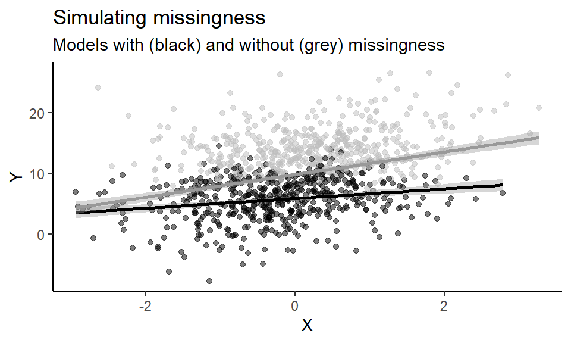
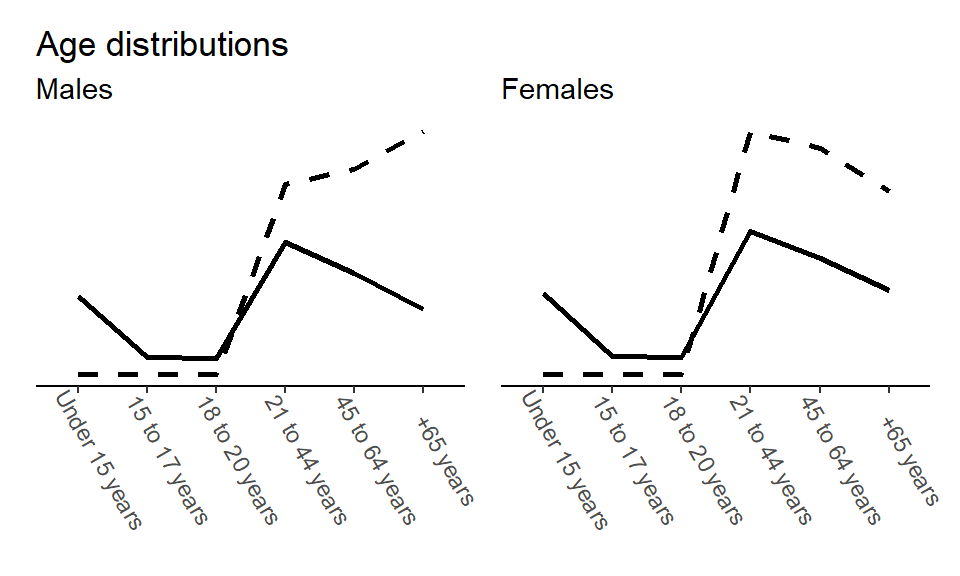
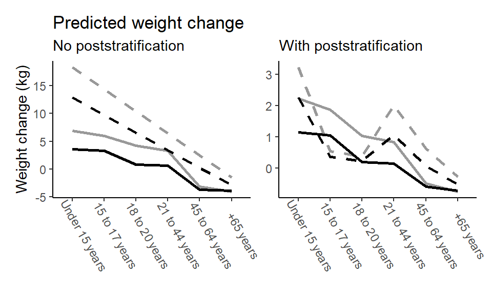
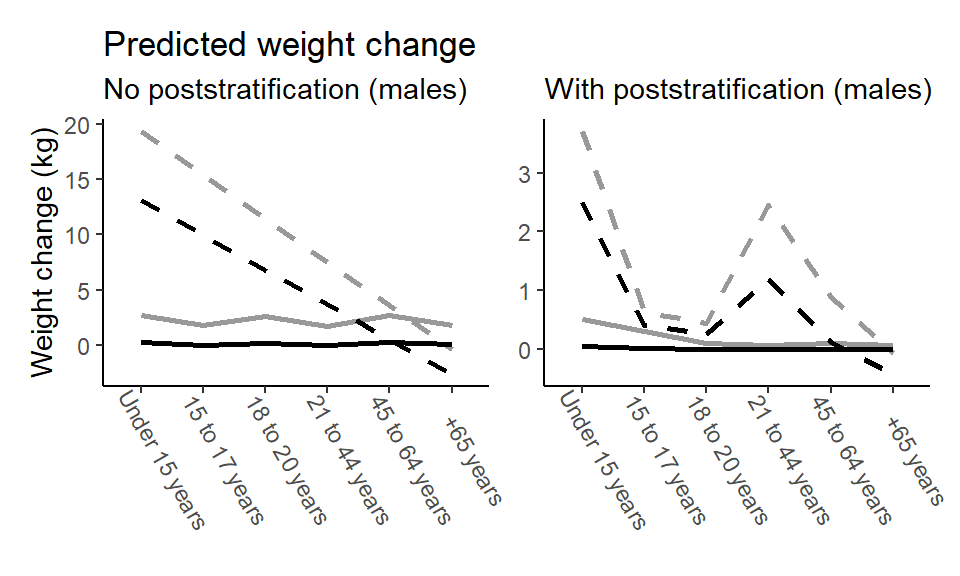
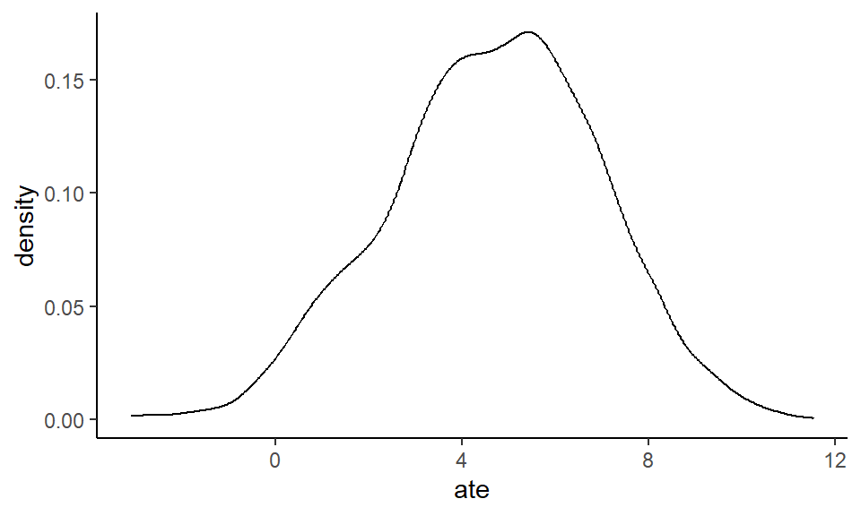

Chapter 5 Most of Your Data is Almost Always Missing
5.1 Simulating missingness
We first simulate informative missingness where the outcome is associated with sampling…
set.seed(2025)
n <- 1e3
bX <- 2
X <- rnorm(n, 0, 1)
Y <- bX*X + rnorm(n, 10, 5)
prob_missing <- plogis(Y - mean(Y))
miss <- runif(n) < prob_missing
Y_miss <- Y
Y_miss[miss] <- NA
d_miss <- data.frame(X = X, Y = Y, Y_miss = Y_miss)… And then fit two different models: First, a model fitted only on the non-missing observations and then a model on all the data, as if we had access to the full population.
library(ggplot2)
ggplot(d_miss, aes(x = X, y = Y)) +
geom_point(aes(color = is.na(Y_miss)), alpha = 0.5) +
geom_smooth(method = "lm", formula = y ~ x, linetype = "solid", color = "black", data = d_miss[!is.na(Y_miss), ]) +
geom_smooth(method = "lm", formula = y ~ x, linetype = "solid", color = "grey60", data = d_miss) +
scale_color_manual(values = c("black", "grey"), labels = c("Observed", "Missing")) +
labs(title = "Simulating missingness",
subtitle = "Models with (black) and without (grey) missingness",
x = "X", y = "Y") +
theme_classic() +
theme(legend.position = "none")
5.2 Poststratification
To illustrate poststratification, we return to the nhefs dataset. We also load the US 2021 census, which will help us re-weight out model predictions to the greater US population.
library(causaldata)
d <- nhefs
d$sex <- as.factor(d$sex)
census2021 <- read.csv("data/CensusUS2021.csv")We then re-score the census and the nhefs data, such that the variable levels are consistent. We also calculate census proportions from the percentages in the original census data set.
census <- census2021
census$age_group[census$AGE_GROUP == "Under 15 years"] <- 1
census$age_group[census$AGE_GROUP == "15 to 17 years"] <- 2
census$age_group[census$AGE_GROUP == "18 to 20 years"] <- 3
census$age_group[census$AGE_GROUP == "21 to 44 years"] <- 4
census$age_group[census$AGE_GROUP == "45 to 64 years"] <- 5
census$age_group[census$AGE_GROUP == "65 years and over"] <- 6
census$sex <- ifelse(census$SEX == "FEMALE", 1, 0) |> as.factor()
census$proportion <- census$PERCENTAGE/100
write.csv(census, "data/census_ageGroups.csv", row.names = FALSE)
d2 <- d
d2$age_group[d2$age < 15] <- 1 # "Under 15 years"
d2$age_group[d2$age >= 15 & d2$age <= 17] <- 2 # "15 to 17 years"
d2$age_group[d2$age >= 18 & d2$age <= 20] <- 3 # "18 to 20 years"
d2$age_group[d2$age >= 21 & d2$age <= 44] <- 4 # "21 to 44 years"
d2$age_group[d2$age >= 45 & d2$age <= 64] <- 5 # "45 to 64 years"
d2$age_group[d2$age > 64] <- 6 # "65 years and over"
write.csv(d2, "data/nhefs_ageGroups.csv", row.names = FALSE)We can then check how the two datasets compare in their distributions of the covariates age and sex.
library(patchwork)
library(dplyr)
library(ggplot2)
### Calculate demographic proportions in the nhefs data...
d3 <- d2 |>
group_by(age_group, sex) |>
summarise(n = n()) |>
mutate(proportion = n/sum(n)) |>
ungroup()
### ... And fill in missing demographic combinations
d3 <- rbind(data.frame(age_group = c(1,1,2,2,3,3),
sex = rep(c(0,1), 3),
n = 0,
proportion = 0),
d3)
### Make age_group a factor variable
d3$age_group <- factor(d3$age_group, levels = 1:6)
census$age_group <- factor(census$age_group, levels = 1:6)
### Plotting distributions of age groups for each sex in nhefs and census
## Males
p1 <- ggplot() +
geom_line(data = subset(d3, sex == 0),
aes(x = age_group, y = proportion, group = 1), linetype = "dashed", linewidth = 1) +
geom_line(data = subset(census, SEX == "MALE"),
aes(x = age_group, y = PERCENTAGE/100, group = 1), linewidth = 1) +
theme_classic() +
theme(
axis.text.y = element_blank(),
axis.ticks.y = element_blank(),
axis.title.y = element_blank(),
axis.line.y = element_blank(),
axis.text.x = element_text(angle = -60, vjust = -1)) +
scale_x_discrete(NULL,
labels = c(
"1" = "Under 15 years",
"2" = "15 to 17 years",
"3" = "18 to 20 years",
"4" = "21 to 44 years",
"5" = "45 to 64 years",
"6" = "+65 years")) +
labs(title = "Age distributions",
subtitle = "Males")
## Females
p2 <- ggplot() +
geom_line(data = subset(d3, sex == 1),
aes(x = age_group, y = proportion, group = 1), linetype = "dashed", linewidth = 1) +
geom_line(data = subset(census, SEX == "FEMALE"),
aes(x = age_group, y = PERCENTAGE/100, group = 1), linewidth = 1) +
theme_classic() +
theme(
axis.text.y = element_blank(),
axis.ticks.y = element_blank(),
axis.title.y = element_blank(),
axis.line.y = element_blank(),
axis.text.x = element_text(angle = -60, vjust = -1)) +
scale_x_discrete(NULL,
labels = c(
"1" = "Under 15 years",
"2" = "15 to 17 years",
"3" = "18 to 20 years",
"4" = "21 to 44 years",
"5" = "45 to 64 years",
"6" = "+65 years")) +
labs(subtitle = "Females")
(p1 + p2)
5.2.1 Frequentist poststratification
We show two different poststratification implementations. First, a basic frequentist approach – see e.g. also https://github.com/RohanAlexander/mrp_workshop/blob/master/getting-started-with-mrp.Rmd
First, we fit a model on the re-scored nhefs data (stored in d2) and include interactions between the exposure qsmk and each of the two covariates (sex and age>_group) to make the model reasonably flexible.
We then apply g-computation with a twist. The twist is that we use the model fitted on nhefs data to get potential outcomes predictions (\(Y^{X=1}\) and \(Y^{X=0}\)) for the census data frame and then weight our predictions with the demographic proportions of each combination of sex and age group in the greater US population according to the census. We finally calculate the difference in means between the weighted predictions to get a marginal effect estimate, which we find to be around 7 kg. Before we can do any of it, however, we need to make sure that age_group is treated as numeric and sex as a factor, since this was the variable types used for model fitting.
census$EX1 <- predict(mod,
newdata = transform(census,
qsmk = 1))
census$EX0 <- predict(mod,
newdata = transform(census,
qsmk = 0))
census$wEX1 <- census$EX1*census$proportion
census$wEX0 <- census$EX0*census$proportion
with(census, sum(wEX1)-sum(wEX0))## [1] 6.991724Here’s the code to reproduce the accompanying table in the text.
xtable::xtable(census[c("AGE_GROUP", "SEX", "EX1", "EX0","wEX1", "wEX0")],
digits = c(0,0,0,1,1,1,1), include.rownames=FALSE)## % latex table generated in R 4.4.1 by xtable 1.8-4 package
## % Sun Aug 24 22:07:42 2025
## \begin{table}[ht]
## \centering
## \begin{tabular}{rllrrrr}
## \hline
## & AGE\_GROUP & SEX & EX1 & EX0 & wEX1 & wEX0 \\
## \hline
## 1 & Under 15 years & MALE & 19.4 & 13.1 & 3.7 & 2.5 \\
## 2 & 15 to 17 years & MALE & 15.4 & 10.0 & 0.6 & 0.4 \\
## 3 & 18 to 20 years & MALE & 11.5 & 6.8 & 0.4 & 0.3 \\
## 4 & 21 to 44 years & MALE & 7.5 & 3.7 & 2.4 & 1.2 \\
## 5 & 45 to 64 years & MALE & 3.6 & 0.5 & 0.9 & 0.1 \\
## 6 & 65 years and over & MALE & -0.4 & -2.6 & -0.1 & -0.4 \\
## 7 & Under 15 years & FEMALE & 18.3 & 12.9 & 3.2 & 2.3 \\
## 8 & 15 to 17 years & FEMALE & 14.4 & 9.7 & 0.5 & 0.4 \\
## 9 & 18 to 20 years & FEMALE & 10.4 & 6.6 & 0.4 & 0.2 \\
## 10 & 21 to 44 years & FEMALE & 6.5 & 3.4 & 2.0 & 1.1 \\
## 11 & 45 to 64 years & FEMALE & 2.5 & 0.3 & 0.6 & 0.1 \\
## 12 & 65 years and over & FEMALE & -1.5 & -2.9 & -0.3 & -0.5 \\
## \hline
## \end{tabular}
## \end{table}5.2.2 Bayesian poststratification
We finally show a fully Bayesian poststratification routine. To showcase the difference between a single-level (i.e., fixed effects) and a multilevel (i.e., random effects) model for poststratification, we fit a Bayesian multilevel model and contrast that with the frequentist model predictions stored in census. For fitting, we again use the brms package with default priors and a seed for reproducibility. We allow the effect of the exposure qsmk vary within both sex and age_group using common R formula syntax.
library(brms)
bayes_mod <- brm(wt82_71 ~ 1 + (1 + qsmk | sex) + (1 + qsmk | age_group),
data = d2, cores = 4, seed = 42,
file = "fits/bayes_poststrat")Next, we do two things with this model. First, we compute the posterior mean predictions for each covariate combination without applying poststratification.
library(tidybayes)
### Predict outcome when exposure X = 1 for all
psEX1 <- add_epred_draws(object = bayes_mod,
newdata = transform(census, qsmk=1),
# Predict for covariates combinations
# not observed in the training data (nhefs)
allow_new_levels = TRUE) |>
# Posterior means for each covariate combination
group_by(age_group, sex) |>
summarise(psEX1 = mean(.epred))
### Predict outcome when exposure X = 0 for all
psEX0 <- add_epred_draws(object = bayes_mod,
newdata = transform(census, qsmk=0),
allow_new_levels = TRUE) |>
group_by(age_group, sex) |>
summarise(psEX0 = mean(.epred))Then, we again compute the marginal mean predictions for each covariate combination but this time applying poststratification weights. Everything else is the same.
### Predict outcome when exposure X = 1 for all
wpsEX1 <- add_epred_draws(object = bayes_mod,
newdata = transform(census, qsmk=1),
allow_new_levels = TRUE) |>
# New bit: Re-weight model predictions using census proportions
mutate(estimate_prop = .epred*proportion) |>
group_by(age_group, sex, .draw) |>
summarise(wpsEX1 = sum(estimate_prop)) |>
# Posterior means for each covariate combination
group_by(age_group, sex) |>
summarise(wpsEX1 = mean(wpsEX1))
### Predict outcome when exposure X = 0 for all
wpsEX0 <- add_epred_draws(object = bayes_mod,
newdata = transform(census, qsmk=0),
allow_new_levels = TRUE) |>
mutate(estimate_prop = .epred*proportion) |>
group_by(age_group, sex, .draw) |>
summarise(wpsEX0 = sum(estimate_prop)) |>
group_by(age_group, sex) |>
summarise(wpsEX0 = mean(wpsEX0))We then collect the posterior mean predictions and the frequentist predictions in two data frames, without and with poststratification…
### No poststratification
ps <- data.frame(age_group = census$AGE_GROUP,
sex = census$SEX,
EX1 = census$EX1,
EX0 = census$EX0,
psEX1 = psEX1$psEX1,
psEX0 = psEX0$psEX0,
E = census$EX1 - census$EX0,
psE = psEX1$psEX1 - psEX0$psEX0)
ps$age_group <- factor(ps$age_group, levels = c(
"1" = "Under 15 years",
"2" = "15 to 17 years",
"3" = "18 to 20 years",
"4" = "21 to 44 years",
"5" = "45 to 64 years",
"6" = "65 years and over"))
### With poststratification
psw <- data.frame(age_group = census$AGE_GROUP,
sex = census$SEX,
wEX1 = census$wEX1,
wEX0 = census$wEX0,
wpsEX1 = wpsEX1$wpsEX1,
wpsEX0 = wpsEX0$wpsEX0)
psw$age_group <- factor(psw$age_group, levels = c(
"1" = "Under 15 years",
"2" = "15 to 17 years",
"3" = "18 to 20 years",
"4" = "21 to 44 years",
"5" = "45 to 64 years",
"6" = "65 years and over"))… And plot the comparisons.
p1 <- ggplot() +
geom_line(data = subset(ps, sex == "FEMALE"),
aes(x = age_group, y = EX1, group = 1), linetype = "dashed", size = 1, colour = "grey60") +
geom_line(data = subset(ps, sex == "FEMALE"),
aes(x = age_group, y = psEX1, group = 1), size = 1, colour = "grey60") +
geom_line(data = subset(ps, sex == "FEMALE"),
aes(x = age_group, y = EX0, group = 1), linetype = "dashed", size = 1) +
geom_line(data = subset(ps, sex == "FEMALE"),
aes(x = age_group, y = psEX0, group = 1), size = 1) +
theme_classic() +
ylab("Weight change (kg)") +
theme(
axis.text.x = element_text(angle = -60, vjust = -1)) +
scale_x_discrete(NULL,
labels = c(
"1" = "Under 15 years",
"2" = "15 to 17 years",
"3" = "18 to 20 years",
"4" = "21 to 44 years",
"5" = "45 to 64 years",
"65 years and over" = "+65 years")) +
labs(title = "Predicted weight change",
subtitle = "No poststratification")
p2 <- ggplot() +
geom_line(data = subset(psw, sex == "FEMALE"),
aes(x = age_group, y = wEX1, group = 1), linetype = "dashed", size = 1, colour = "grey60") +
geom_line(data = subset(psw, sex == "FEMALE"),
aes(x = age_group, y = wpsEX1, group = 1), size = 1, colour = "grey60") +
geom_line(data = subset(psw, sex == "FEMALE"),
aes(x = age_group, y = wEX0, group = 1), linetype = "dashed", size = 1) +
geom_line(data = subset(psw, sex == "FEMALE"),
aes(x = age_group, y = wpsEX0, group = 1), size = 1) +
theme_classic() +
ylab(NULL) +
theme(
axis.text.x = element_text(angle = -60, vjust = -1)) +
scale_x_discrete(NULL,
labels = c(
"1" = "Under 15 years",
"2" = "15 to 17 years",
"3" = "18 to 20 years",
"4" = "21 to 44 years",
"5" = "45 to 64 years",
"65 years and over" = "+65 years")) +
labs(subtitle = "With poststratification")
(p1 + p2)
In the text, we showed predictions for females only, but the results are similar for males.
p3 <- ggplot() +
geom_line(data = subset(ps, sex == "MALE"),
aes(x = age_group, y = EX1, group = 1), linetype = "dashed", size = 1, colour = "grey60") +
geom_line(data = subset(ps, sex == "MALE"),
aes(x = age_group, y = psEX1, group = 1), size = 1, colour = "grey60") +
geom_line(data = subset(ps, sex == "MALE"),
aes(x = age_group, y = EX0, group = 1), linetype = "dashed", size = 1) +
geom_line(data = subset(ps, sex == "MALE"),
aes(x = age_group, y = psEX0, group = 1), size = 1) +
theme_classic() +
ylab("Weight change (kg)") +
theme(
axis.text.x = element_text(angle = -60, vjust = -1)) +
scale_x_discrete(NULL,
labels = c(
"1" = "Under 15 years",
"2" = "15 to 17 years",
"3" = "18 to 20 years",
"4" = "21 to 44 years",
"5" = "45 to 64 years",
"65 years and over" = "+65 years")) +
labs(title = "Predicted weight change",
subtitle = "No poststratification (males)")
p4 <- ggplot() +
geom_line(data = subset(psw, sex == "MALE"),
aes(x = age_group, y = wEX1, group = 1), linetype = "dashed", size = 1, colour = "grey60") +
geom_line(data = subset(psw, sex == "MALE"),
aes(x = age_group, y = wpsEX1, group = 1), size = 1, colour = "grey60") +
geom_line(data = subset(psw, sex == "MALE"),
aes(x = age_group, y = wEX0, group = 1), linetype = "dashed", size = 1) +
geom_line(data = subset(psw, sex == "MALE"),
aes(x = age_group, y = wpsEX0, group = 1), size = 1) +
theme_classic() +
ylab(NULL) +
theme(
axis.text.x = element_text(angle = -60, vjust = -1)) +
scale_x_discrete(NULL,
labels = c(
"1" = "Under 15 years",
"2" = "15 to 17 years",
"3" = "18 to 20 years",
"4" = "21 to 44 years",
"5" = "45 to 64 years",
"65 years and over" = "+65 years")) +
labs(subtitle = "With poststratification (males)")
(p3 + p4)
5.2.2.1 Poststratified marginal causal effect
The above workflow computed and plotted posterior means, but with a Bayesian model we have a full posterior distribution to work with. So let’s do that. This time, we’re interested in the poststratified estimate for the population as a whole. This means that we have to marginalize over the covariates, which we do by grouping on posterior draws instead of on the covariates. The rest should look familiar.
### Predict outcome when exposure X = 1 for all
ateEX1 <- add_epred_draws(object = bayes_mod,
newdata = transform(census, qsmk=1),
allow_new_levels = TRUE) |>
mutate(estimate_prop = .epred*proportion) |>
# New bit: Marginalize over covariate combinations by grouping on .draw
group_by(.draw) |>
summarise(.epred = sum(estimate_prop))
### Predict outcome when exposure X = 1 for all
ateEX0 <- add_epred_draws(object = bayes_mod,
newdata = transform(census, qsmk=0),
allow_new_levels = TRUE) |>
mutate(estimate_prop = .epred*proportion) |>
group_by(.draw) |>
summarise(.epred = sum(estimate_prop))
### Compute poststratified ATE
poststratified_ate <- data.frame(EX1 = ateEX1$.epred,
EX0 = ateEX0$.epred,
draw = ateEX0$.draw) |>
# For each posterior draw...
group_by(draw) |>
# ... Calculate ATE
summarise(ate = mean(EX1 - EX0))The poststratified marginal causal effect is around 4.7 kg but with a fairly wide 95% interval ranging from around 0 to 9 kg.
## y ymin ymax .width .point .interval
## 1 4.677918 0.1554798 8.870636 0.95 mean hdiBehold the full posterior poststratified marginal causal effect!

5.3 Instrumental variable analysis
5.3.1 Preparing Cohen et al. (2015)
We’ll use the data ACT_IllLvlMainWithMalProbs_FINAL_pub.dta from Cohen, Dupas, and Schaner (2015), which can be downloaded from the book’s Github page or www.openicpsr.org.
The data need to be wrangled a little before use. Each row is an illness period, where most households only have a single illness period. A few households, however, do have more. The models we use here assume – as did the original study – illness periods to be independent.
library(haven) # for loading .dta file
library(dplyr)
### Load original data
dta <- read_dta("data/ACT_IllLvlMainWithMalProbs_FINAL_pub.dta") |> as.data.frame()
### Filter data set, as the original study did -- re-use name from original analysis script
all_ill_prob <- subset(dta, first_ep==1 & ex_post==0 & rdt_any==0)
### Collaps all ACT subsidy types
all_ill_prob$act_any <- ifelse(all_ill_prob$act40==1 |
all_ill_prob$act60==1 |
all_ill_prob$act100==1,
1, 0) |> as.integer()
### Replace sample-mean imputed values with NAs to allow Bayesian imputation, and then standardize
all_ill_prob$B_head_age_bimps <- with(all_ill_prob,
ifelse(B_head_age_missing==1, NA, B_head_age_imputed))
### Prepare data for IV and multilevel analysis
cohen2015 <- all_ill_prob |>
select(householdid, took_act, act_any, B_head_age_bimps, head_lit, used_act_v, totstrata)
### Change col names
colnames(cohen2015) <- c("hid", "act", "subsidy", "age", "literate", "voucher", "stratum")
### Declare variable types
cohen2015$hid <- as.factor(cohen2015$hid)
cohen2015$act <- as.integer(cohen2015$act)
cohen2015$subsidy <- as.integer(cohen2015$subsidy)
cohen2015$age <- as.numeric(cohen2015$age)
cohen2015$literate <- as.integer(cohen2015$literate)
cohen2015$voucher <- as.integer(cohen2015$voucher)
cohen2015$stratum <- as.factor(cohen2015$stratum)
### Subset data for missing data analysis
cohen2015miss <- cohen2015 |>
select(act, subsidy, age, literate)
### Export
write.csv(cohen2015, "data/cohen2015.csv", row.names = FALSE)
write.csv(cohen2015miss, "data/cohen2015miss.csv", row.names = FALSE)5.3.2 Randomized treatment assignment as instrument
d <- read.csv("data/cohen2015.csv")
### Fit outcome and treatment models
y_mod <- glm(act ~ subsidy,
data = d,
family = "binomial")
x_mod <- glm(voucher ~ subsidy,
data = d,
family = "binomial")
### Intention-to-treat analysis
YV1 <- predict(y_mod,
newdata = transform(d, subsidy = 1),
type = "response")
YV0 <- predict(y_mod,
newdata = transform(d, subsidy = 0),
type = "response")
itt <- mean(YV1) - mean(YV0)
### "Compliance analysis"
XV1 <- predict(x_mod,
newdata = transform(d, subsidy = 1),
type = "response")
XV0 <- predict(x_mod,
newdata = transform(d, subsidy = 0),
type = "response")
compliance <- mean(XV1) - mean(XV0)
### Wald IV ratio estimator / Treatment-on-the-treated estimate
(iv <- itt/compliance)## [1] 0.95510565.4 Bayesian instrumental variable analysis
As mentioned in the text, we also want to demonstrate another approach to instrumental variable analysis, namely a Bayesian implementation.
Kurz (2023, ch. 14) gives a rundown of instrumental variable analysis using the brms package, building on McElreath (2020), and we follow that general approach here. We refer to those sources for further details.
We first define two model formulas, one for the instrument (subsidy) predicting treatment (voucher) \(\textrm{E}[X \mid V]\) and another for the treatment predicting ACT uptake (act) model \(\textrm{E}[Y \mid X]\). This is superficially similar to how we fitted y_mod and x_mod in the frequentist setting in the text and above but note a few differences:
First, while the model predicting voucher use from subsidy assignment corresponds to the “compliance analysis” (x_mod), the model predicting ACT uptake from voucher use is not used for the Wald estimator.
Second, in the Bayesian setup we fit the two models in the same go. In brms this is facilitated by wrapping the model formulas in bf() and then combining these in the model fitting call using +. Finally, we allow the model to estimate the residual correlation between these two models by setting set_rescor(TRUE).
Why does this work as an alternative IV estimator? Recall that we use an instrumental variable approach to deal with situations where the treatment variable (here, subsidy) is correlated with the error term of the outcome model – in essence, there’s an open backdoor path between treatment and the outcome. This residual correlation could be due to unobserved confounding variables of some sort, which in turn will lead to biased estimates in a simple regression model. We account for the possibility that such confounding exists by explicitly modeling this correlation.
library(brms)
# Treatment-instrument model formula
xv_formula <- bf(voucher ~ subsidy)
# Outcome-treatment model formula
yx_formula <- bf(act ~ voucher)
# Fit models and set residual correlation = TRUE
bayes_iv_mod <- brm(xv_formula + yx_formula + set_rescor(TRUE),
data = d, cores = 4, seed = 42,
file = "fits/bayes_iv")By inspecting the summary, we see that we get essentially the same results as above – act_voucher corresponds to the Wald esimate – except we now have a posterior distribution to work with.
## Family: MV(gaussian, gaussian)
## Links: mu = identity; sigma = identity
## mu = identity; sigma = identity
## Formula: voucher ~ subsidy
## act ~ voucher
## Data: d (Number of observations: 631)
## Draws: 4 chains, each with iter = 2000; warmup = 1000; thin = 1;
## total post-warmup draws = 4000
##
## Regression Coefficients:
## Estimate Est.Error l-95% CI u-95% CI Rhat Bulk_ESS Tail_ESS
## voucher_Intercept 0.13 0.03 0.06 0.20 1.00 2810 2312
## act_Intercept 0.07 0.06 -0.05 0.18 1.00 1313 1228
## voucher_subsidy 0.20 0.04 0.13 0.28 1.00 2455 2216
## act_voucher 0.96 0.20 0.60 1.40 1.00 1294 1226
##
## Further Distributional Parameters:
## Estimate Est.Error l-95% CI u-95% CI Rhat Bulk_ESS Tail_ESS
## sigma_voucher 0.44 0.01 0.42 0.46 1.00 3324 2357
## sigma_act 0.44 0.04 0.39 0.54 1.00 1366 1265
##
## Residual Correlations:
## Estimate Est.Error l-95% CI u-95% CI Rhat Bulk_ESS Tail_ESS
## rescor(voucher,act) -0.38 0.17 -0.68 -0.02 1.00 1312 1184
##
## Draws were sampled using sampling(NUTS). For each parameter, Bulk_ESS
## and Tail_ESS are effective sample size measures, and Rhat is the potential
## scale reduction factor on split chains (at convergence, Rhat = 1).Now, since we don’t include covariates in these models, it’s safe to just work with the coefficients here; the marginal and conditional estimates are the same in this particular case. However, in cases where the conditional and marginal effects differ, what we’ve done here is to calculate a conditional estimate, since we’re simply working with the coefficients. To get a marginal estimate in such a case, we’d have to implement something like g-computation. An explicitly marginal workflow could look like the following, following a familiar g-computation approach:
# Calculate predicted values for voucher = 1 and voucher = 0
bayes_YX1 <- add_epred_draws(object = bayes_iv_mod,
newdata = transform(d, voucher = 1),
resp = "act")
bayes_YX0 <- add_epred_draws(object = bayes_iv_mod,
newdata = transform(d, voucher = 0),
resp = "act")
# Bayesian marginal IV
bayes_marginal_iv <- data.frame(EX1 = bayes_YX1$.epred,
EX0 = bayes_YX0$.epred,
draw = bayes_YX0$.draw) |>
# For each posterior draw...
group_by(draw) |>
# ... Calculate ATE
summarise(late = mean(EX1 - EX0))Again, in this simple example, the conditional and marginal IV results are identical.
## y ymin ymax .width .point .interval
## 1 0.9575332 0.6015686 1.397755 0.95 mean qi5.5 Session info
## R version 4.4.1 (2024-06-14 ucrt)
## Platform: x86_64-w64-mingw32/x64
## Running under: Windows 10 x64 (build 19045)
##
## Matrix products: default
##
##
## locale:
## [1] LC_COLLATE=Danish_Denmark.utf8 LC_CTYPE=Danish_Denmark.utf8
## [3] LC_MONETARY=Danish_Denmark.utf8 LC_NUMERIC=C
## [5] LC_TIME=Danish_Denmark.utf8
##
## time zone: Europe/Copenhagen
## tzcode source: internal
##
## attached base packages:
## [1] stats graphics grDevices utils datasets methods base
##
## other attached packages:
## [1] haven_2.5.4 cobalt_4.5.5 causaldata_0.1.4
## [4] marginaleffects_0.23.0 dplyr_1.1.4 tidybayes_3.0.6
## [7] brms_2.21.0 Rcpp_1.0.12 sandwich_3.1-1
## [10] boot_1.3-30 patchwork_1.3.0 ggplot2_3.5.1
##
## loaded via a namespace (and not attached):
## [1] tidyselect_1.2.1 svUnit_1.0.6 farver_2.1.2
## [4] loo_2.8.0 fastmap_1.2.0 tensorA_0.36.2.1
## [7] digest_0.6.35 estimability_1.5.1 lifecycle_1.0.4
## [10] StanHeaders_2.35.0.9000 magrittr_2.0.3 posterior_1.6.1
## [13] compiler_4.4.1 rlang_1.1.4 sass_0.4.9
## [16] tools_4.4.1 yaml_2.3.8 data.table_1.15.4
## [19] collapse_2.0.16 knitr_1.47 labeling_0.4.3
## [22] bridgesampling_1.1-2 pkgbuild_1.4.4 plyr_1.8.9
## [25] abind_1.4-8 withr_3.0.2 purrr_1.0.2
## [28] grid_4.4.1 stats4_4.4.1 xtable_1.8-4
## [31] colorspace_2.1-0 inline_0.3.19 emmeans_1.10.5
## [34] scales_1.3.0 insight_0.20.5 cli_3.6.2
## [37] mvtnorm_1.2-5 rmarkdown_2.27 crayon_1.5.3
## [40] generics_0.1.4 RcppParallel_5.1.7 rstudioapi_0.16.0
## [43] reshape2_1.4.4 tzdb_0.4.0 cachem_1.1.0
## [46] rstan_2.35.0.9000 stringr_1.5.1 splines_4.4.1
## [49] bayesplot_1.11.1 parallel_4.4.1 matrixStats_1.3.0
## [52] vctrs_0.6.5 Matrix_1.7-0 jsonlite_1.8.8
## [55] bookdown_0.41 hms_1.1.3 arrayhelpers_1.1-0
## [58] ggdist_3.3.2 jquerylib_0.1.4 tidyr_1.3.1
## [61] glue_1.7.0 chk_0.9.2 codetools_0.2-20
## [64] distributional_0.5.0 stringi_1.8.4 gtable_0.3.5
## [67] QuickJSR_1.2.2 munsell_0.5.1 tibble_3.2.1
## [70] pillar_1.10.2 htmltools_0.5.8.1 Brobdingnag_1.2-9
## [73] R6_2.5.1 evaluate_1.0.4 lattice_0.22-6
## [76] readr_2.1.5 highr_0.11 backports_1.5.0
## [79] bslib_0.7.0 rstantools_2.4.0 coda_0.19-4.1
## [82] gridExtra_2.3 nlme_3.1-164 checkmate_2.3.1
## [85] mgcv_1.9-1 xfun_0.48 zoo_1.8-12
## [88] forcats_1.0.0 pkgconfig_2.0.3